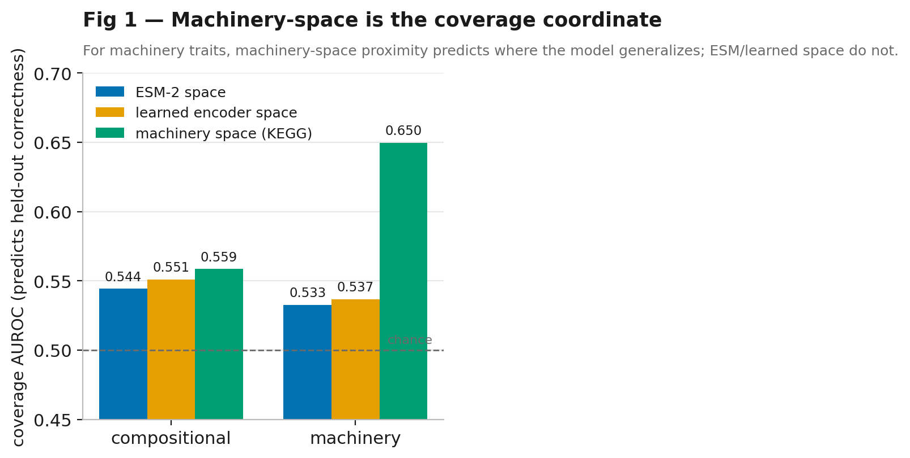
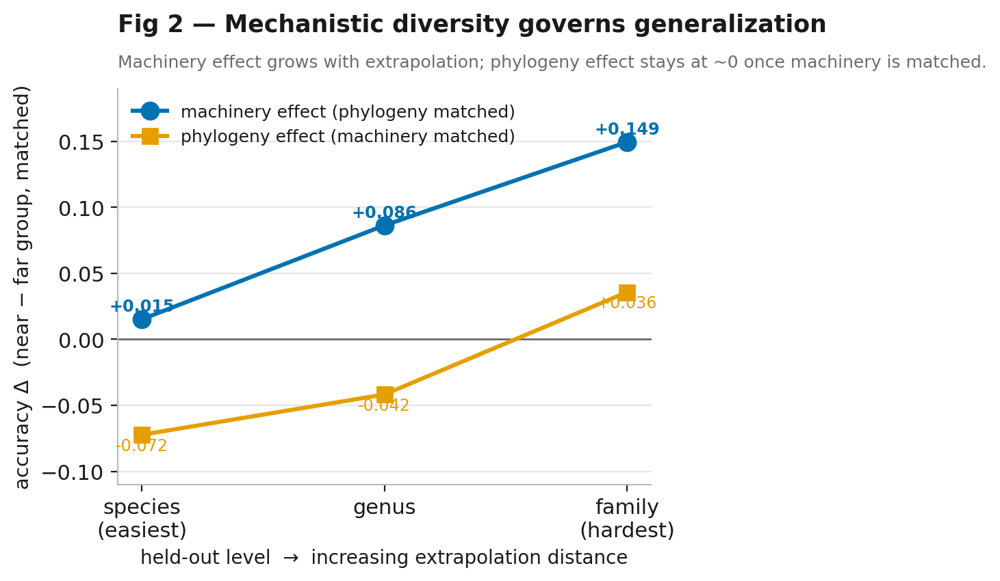
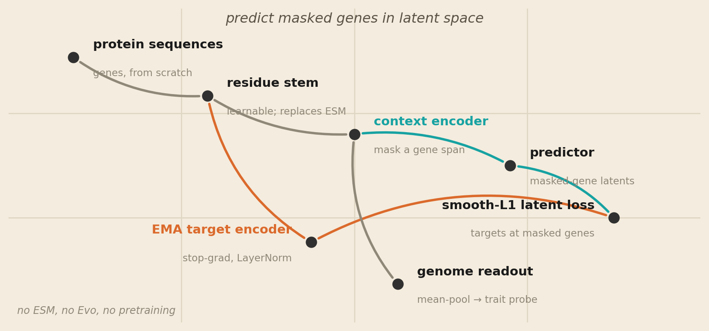
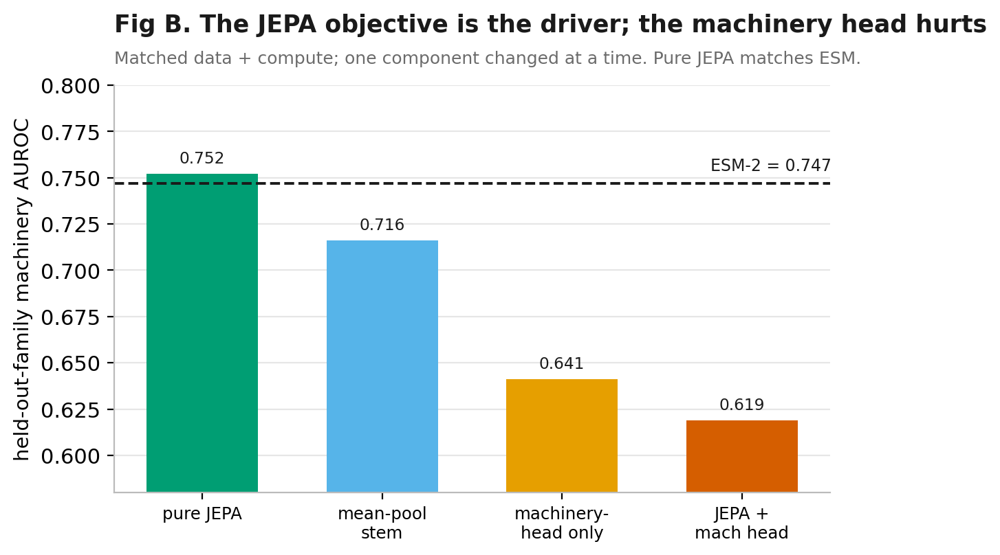
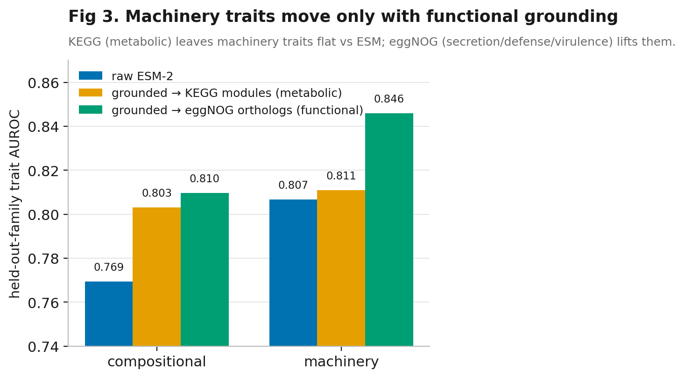
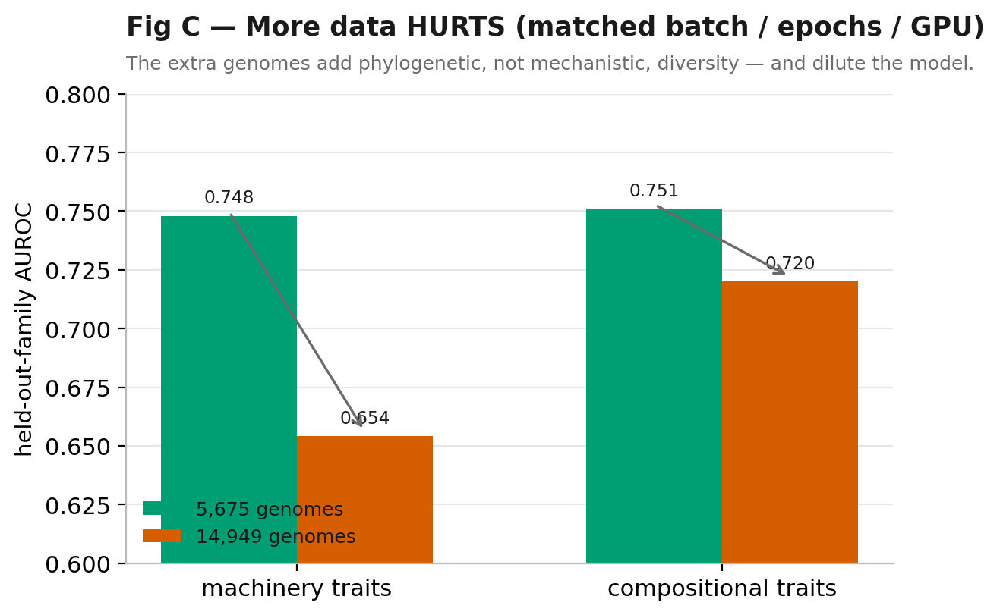

Latent Prediction Beats Scale: A World Model for Held-Out Microbial Traits
A Joint-Embedding Predictive Architecture trained from scratch on 5,675 bacterial genomes (no ESM, no Evo, no pretrained foundation model) matches ESM-2 on held-out-family machinery-trait transfer. The lever is the objective and the diversity of the data, not scale: adding more genomes makes it worse.
Abstract
Foundation models (FMs) for biological sequence are increasingly proposed for microbial phenotype prediction, yet recent benchmarks find they rarely beat simple baselines, and it is unclear what they add. Rather than ask “does the FM win,” we ask what actually governs generalization, and whether a small group can build a competitive model by getting the objective and the data diversity right rather than by scaling. We report three results. (1) The objective works. A Joint-Embedding Predictive Architecture (JEPA) trained from scratch on the amino-acid sequences of just 5,675 bacterial genomes (no ESM, no Evo, no pretrained foundation model) matches ESM-2, pretrained on ~250M proteins, on held-out-family machinery-trait transfer (AUROC 0.748 vs 0.747). (2) The right coordinate is mechanistic, not phylogenetic. In a resampled matched-split analysis, proximity in machinery space predicts held-out generalization while phylogenetic distance carries no independent signal, and the effect grows with extrapolation distance. (3) More data is not the lever; the right data is. Scaling the JEPA from 5,675 to 14,949 genomes under a matched protocol decreases machinery-trait AUROC (0.748→0.654), because the added genomes contribute phylogenetic, not mechanistic, diversity.
A sharper question than “does the FM win”
Neural scaling laws promise loss falling as a power law in data and model size, and biological foundation models such as ESM-2 and Evo 2 were expected to inherit it. On function and phenotype prediction they largely do not: added pretraining data gives diminishing returns, simple baselines match far larger models, and single-cell FMs neither beat simple baselines nor improve when their pretraining data is made more diverse. Prior work in this program named this a compositional ceiling and argued it is a statement about which axis one samples.
We ask whether that diagnosis points to a constructive path: a model whose inductive bias and training data match it. We adopt the JEPA framing (predict masked content in a learned latent space rather than reconstructing tokens, so the target encoder discards unpredictable low-level detail and concentrates capacity on functional structure) and build such a model for bacterial genomes from scratch, evaluated under held-out-taxon phenotype transfer.
The coordinate is mechanistic, not phylogenetic
Before building a model, we ask which coordinate predicts where a trait model generalizes. For each held-out-family test genome we compute its proximity to the training set in three spaces (ESM-2 embedding, a learned encoder, and KEGG machinery space) and measure how well each predicts per-genome correctness. Machinery space is the coverage coordinate: for machinery traits it predicts held-out correctness at AUROC 0.65, versus 0.53 for embedding or learned-encoder proximity.

We de-confound machinery from phylogeny by construction: we build matched test groups with an identical phylogenetic-distance distribution but differing machinery distance (and the symmetric control), and contrast accuracy across species/genus/family held-out splits. Machinery-space distance drives generalization; phylogenetic distance carries no independent signal at any depth, and the machinery effect grows monotonically with extrapolation distance.

A from-scratch genome-JEPA
A learnable residue stem (amino-acid embedding plus 1-D convolutions) maps each protein to a gene embedding, replacing ESM entirely. A transformer context encoder over the gene sequence, with a masked contiguous gene span, predicts the masked genes’ latents produced by an EMA target encoder (stop-gradient, LayerNorm). There is no tokenizer and no pretrained input; the pooled context is frozen and read out with a logistic trait probe.

Matching ESM-2 at 40,000× less data
Trained on 5,675 genomes (3,005 held-out-family train) for 40 epochs on a single A100, the frozen genome embedding matches ESM-2 on machinery traits: pure JEPA 0.748 versus ESM-2 0.747 AUROC. That is parity from a model trained on roughly 40,000× less data, with no pretrained foundation model in the loop. The interesting claim is not that latent prediction is more accurate (on this evidence it is a tie) but that the objective alone, learned from scratch on a few thousand genomes, reaches the accuracy of a protein language model pretrained on hundreds of millions of sequences.
The objective is the driver
Holding data and compute fixed and varying one component at a time, the latent-predictive objective is what carries the signal. A genome-level machinery-prediction head (a plausible-sounding form of supervision) is actively harmful, dropping machinery AUROC by 0.13; removing the context transformer or the JEPA objective also hurts. Less is more: the self-supervised objective alone matches ESM-2, and adding supervision degrades the pooled representation.

The right data, not more data
If mechanistic diversity is the coordinate, then which machinery you ground in, and what kind of diversity you add, should matter more than volume. Grounding a representation to predict functional-ortholog occupancy (eggNOG: secretion, defense, virulence orthologs) lifts machinery-trait AUROC from 0.807 to 0.846, whereas grounding in core-metabolic modules (KEGG) leaves it flat. The hard traits live in specialized machinery, not core metabolism.

We then scaled the from-scratch JEPA from 5,675 to 14,949 genomes under a strictly matched protocol (same GPU, batch size, epochs, and model) varying only the data. More data decreased performance (0.748→0.654). This is not an artifact: the smaller run reproduced the parity result exactly, and only the data differed. The added ~9,000 genomes contributed phylogenetic breadth, not mechanistic diversity, diluting a fixed-capacity representation. One cannot raise the machinery ceiling by adding phylogenetically-diverse genomes, a third, independent confirmation that mechanistic, not phylogenetic, diversity is the lever.

What it means
Three independent lines (a coverage diagnostic, a from-scratch model, and a scaling test) point to one conclusion: a latent-predictive objective is sufficient to reach foundation-model parity at tiny scale, and the binding constraint is the mechanistic diversity of the data, which neither scale nor naive supervision supplies. This reframes the “FMs don’t beat baselines” critique constructively: the failure is one of sampling, and the remedy is mechanistic-diversity-aware curation with a self-supervised objective, not larger models. The natural next step is a mechanistic-diversity sampler that de-duplicates genomes in machinery space rather than sequence space, which our results predict is the way scale finally helps.
Cite
@article{horiuchi2026latent,
title = {Latent Prediction Beats Scale: A World Model for Held-Out Microbial Traits},
author = {Horiuchi, Miyu},
year = {2026},
note = {replicater.xyz/writing/latent-prediction-beats-scale}
}